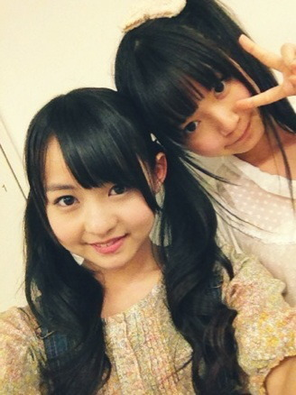

| 2012/06 11 Mon | ひめたん(* ゝω・*)ノ その164 |
世間てのは狭いものでねー
ひめたんの友達の友達が
せっちゃん
(宮澤成良chan)で
ひめたんの友達の妹の先輩が
あしゅ
(齋藤飛鳥chan)なんとー。
つ、つながったー＼(^O^)／

なかいさん。
中元さんと伊藤さんね。
そういや
まりか
(伊藤万理華chan)に、ひめたんビームを伝授してーて
頼まれとったのに忘れてた!
まりかーごめんね('・・`)
明日しよ。あした!
昨日は撮影してきたのー
いろんな衣装を着て撮りました。こんな着替えたのは久しぶりな気がするー
詳細は追って発表されると思うから、お楽しみに(^^)
そーしーて今日はダンスレッスンしてきましたー
最近はイベントやテレビ用のダンスの練習ばっかだったけど、
今日は久々に基礎から。
ストレッチ、筋トレ、んでダンスねーっ
やっぱダンス好きよ。
体の細かい動きとか表情とか見よったら、みんなちょっとずつ個性があって
お勉強になるよね(*^^*)
またみなさんの前で踊りたいなーて思いまーしたっ
あと今週末の名古屋の練習もしてきた!
アンケートありがと!
ひめたんはねー日によりけりだけど
たいてい朝はお米食べるかな(*^^*)
お米はお腹にたまるからいいって聞いたことあるの。
ちなみに最近体にいいからって玄米食べよるよ!
あ明日ひめたんの
乃木坂浪漫
オンエア!
よかったら見てくださいね(^^)
では。
今日の質問はなかなかハードです。
いえすの人、何人おるかなー...
ひめたんは明日の乃木坂浪漫で「家霊」ってお話を読んだんじゃけどー、
「家霊」のお話を知ってる人ー?
おるといいなあ(ω)☆
 誕生日は6/8よー!
誕生日は6月11日!
誕生日は6/8よー!
誕生日は6月11日!
おめでとーうございます＼(^O^)／☆
２人近いね!６月ゆーたらかに座さーんっ
 さゆにゃんが広島の蟻が大きかったってブログに書いてるけど
さゆにゃんが広島の蟻が大きかったってブログに書いてるけど
そんなに大きいの?w
あれくらいが普通の大きさよ(ω)
ひめたんは、さゆにゃんが「アリおっきい」ってびっくりしてることに
逆にびっくりー...
あんれ。なんか複雑になってきた。黙ろうかな。
 たまこちゃんと貝がらブラッコって誰?
たまこちゃんと貝殻ブラッコちゃんって何?
『貝がらブラッコちゃん』って何?(^^)
たまこちゃんとかブラッコちゃんとは何かな?
たまこちゃんと貝殻ブラッコって何~(・・?))ご当地キャラ??
たまこちゃんと貝がらブラッコって誰?
たまこちゃんと貝殻ブラッコちゃんって何?
『貝がらブラッコちゃん』って何?(^^)
たまこちゃんとかブラッコちゃんとは何かな?
たまこちゃんと貝殻ブラッコって何~(・・?))ご当地キャラ??
たまこちゃんとブラッコを知らないのかあ。そうだよね知らないよね。
ご当地ってわけじゃないけど、広島県民と愛媛県民しか知らないってゆー。
あのねー、広島ならホームテレビの天気予報のときに
たまこちゃんやブラッコのアニメ？PV？が流れるの。
たまこちゃんはお料理してたり、ブラッコは踊ってたり
とにかく可愛いのよー(*^^*)
もうーあれだね。youtubeで調べるしか。
 ひめたんの御家族、御親戚、お友達も会場にたくさん来てくれたの?
客席にひめたんのお母さんがいたっていってたけど、
ひめたんの御家族、御親戚、お友達も会場にたくさん来てくれたの?
客席にひめたんのお母さんがいたっていってたけど、
ママさんも客席で見てたの?
ぱぱ、おじいちゃん、おばあちゃん、親戚の方が来てくれた(*^^*)
ままは東京の自宅でお土産のもみじまんじゅう待ってとったよ?
あれー。何でままのこと見たんかね。ひめたんに内緒で瞬間移動...
いいや。きっと人違いです。
 「はしまき」ってなにそれ?美味しいの?
「はしまき」ってなにそれ?美味しいの?
お好み焼きを箸で巻いたらはしまきの完成よ(^O^)
味はなんとなく想像できそうかしら。
形はね、コンビニとかによく売ってるアメリカンドッグみたいになるー。
 ひめたんにお願いがあるのですが
ひめたんにお願いがあるのですが
ひめたん写メを載せる時ピースで顔を隠すことが多いので
顔を隠さないようにしてもらえないでしょうか?
あらーそれは困った。
ひめたんは顔にピースをすることでみなさんにビームを送ってたのですが...
んーたまにはピースなしビームも頑張って送ってみます(`・ω・')
(*´・ω・*)ひめたん
コメント(104)
2012/06/11 23:24